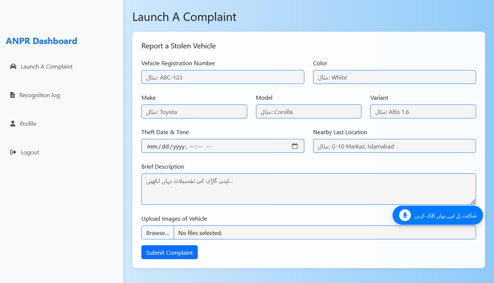

Project Images

landing page with all details

Web form to register and report stolen vehicles with details and images.
AI-powered vehicle recognition from CCTV feeds.
A Final Year Project (FYP) that integrates AI and CCTV feeds for vehicle theft reporting and detection.
This project introduces a Web-Based Stolen Car Reporting System designed to help users report stolen vehicles and track them using AI-powered license plate recognition from CCTV feeds. The system allows users to file complaints, register vehicles, and receive real-time alerts if their stolen car is detected. Built using HTML, CSS, JavaScript, Node.js, Express, MySQL, and AI models, this project provides a secure and efficient way to combat vehicle theft in Pakistan.
landing page with all details
Web form to register and report stolen vehicles with details and images.
AI-powered vehicle recognition from CCTV feeds.